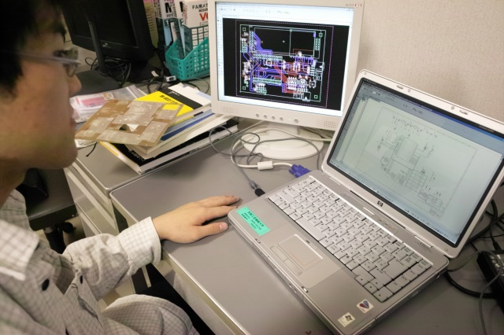
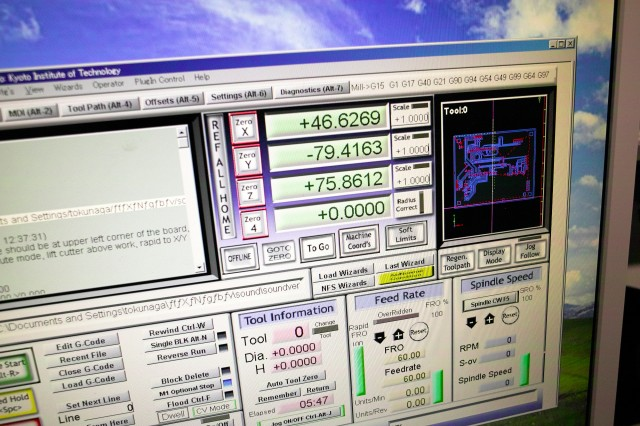
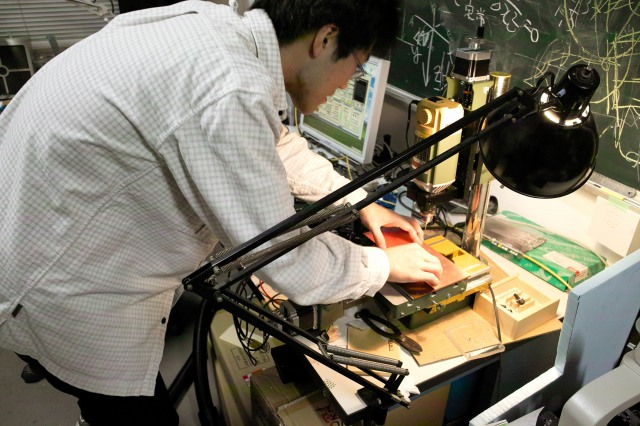
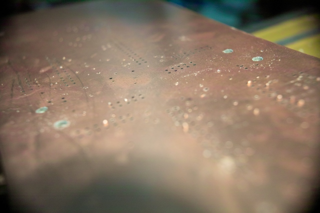
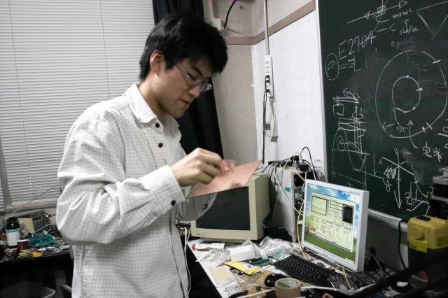
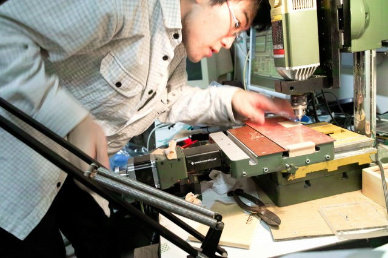
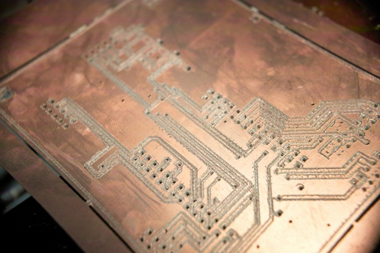
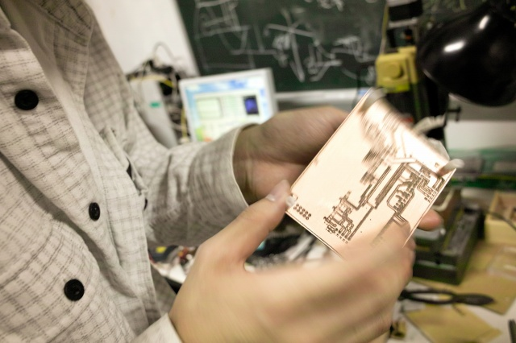

| ・ 両面切削基板 (H23.10.21) | |||
バックラッシュ防止などで立上げ中だったNCが、T永くんの最終調整で運用に入りました。最後は、テーブルの慣性、モーター待機電力まで考慮すると、カタログ値（それ以上かも）で動作するまでに。これはボールネジの脱調とかトラブルで大変になるほど、妙にうれしそうなT永くんだからこそ可能な最終調整です。もうこれでご飯食べていけるよ（ホントに食べていくのですが）！それでは、T永くんの両面切削基板製作の様子を見てみましょう。 |
|||
|

回路設計CADからCAMでNC制御のGコードを生成 |

NC制御ソフトにGコード読み込み | ||
|

表面セット中 |

表と裏を繋ぐスルーホールがばっちりです | ||
|

入念なバリとり |

裏面をセットして | ||
|

表と |

裏で両面切削基板完成です！ | ||
|
切削中の様子 movie by 高橋君カメラ |
|||